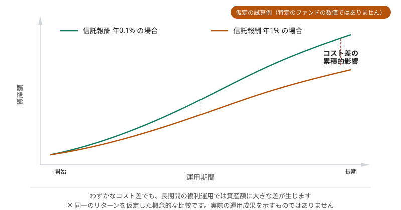

コストと税金
このページで学ぶこと
- 投資にかかる主なコストの種類
- 信託報酬が長期リターンに与える影響
- 投資の利益にかかる税金の基本
- 特定口座と確定申告
- コストを意識した投資の考え方
投資にかかる主なコスト
| コストの種類 | タイミング | 内容 |
|---|---|---|
| 購入時手数料 | 購入時（1回） | 投資信託の購入時に販売会社に支払う手数料。ノーロード（手数料無料）の商品も多い |
| 信託報酬（運用管理費用） | 保有中（継続的） | 投資信託・ETFの運用にかかる費用。年率で表示され、日割りで差し引かれる |
| 信託財産留保額 | 売却時（1回） | 一部の投資信託で売却時に差し引かれる費用。かからない商品も多い |
| 売買手数料 | 売買時 | 株式やETFの売買時に証券会社に支払う手数料 |
| 為替手数料 | 外貨取引時 | 外国資産を売買する際に円と外貨を交換するコスト |
| 口座管理料 | 保有中（定期的） | 証券口座の維持にかかる費用。多くのネット証券では無料 |
信託報酬の重要性
信託報酬は保有中ずっとかかる継続的なコストであるため、長期投資ではリターンに大きな影響を与えます。
信託報酬の仕組み
信託報酬は年率で表示されますが、実際には日割りで計算され、ファンドの純資産から差し引かれます。投資家が別途支払うのではなく、基準価額に反映される形で自動的に徴収されます。
信託報酬の内訳
信託報酬は通常、以下の3者に配分されます。
- 運用会社（委託会社）: ファンドの運用を行う
- 販売会社: ファンドの販売・顧客対応を行う
- 信託銀行（受託会社）: ファンドの資産を管理・保管する
信託報酬の比較ポイント
同じ指数に連動するインデックスファンドでも、信託報酬は商品によって異なります。長期投資では、わずかな信託報酬の違いが最終的なリターンに大きな差を生む可能性があります。ただし、信託報酬の低さだけでなく、純資産総額やトラッキングエラー（指数との乖離）も確認することが重要です。
図：信託報酬の差が長期で与える影響

わずかなコスト差でも長期では大きな資産額の違いにつながります（仮定の試算例であり、特定のファンドの数値ではありません）
投資の利益にかかる税金
投資で得た利益（配当金・分配金・売却益）には、約20%の税金がかかります。
課税される利益の種類
- 配当金・分配金: 株式の配当や投資信託の分配金
- 売却益（譲渡益）: 株式や投資信託を売却して得た利益
NISA口座は非課税
NISA口座で投資した分の利益については、この約20%の税金がかかりません。非課税のメリットを活用するために、まずNISA枠の利用を検討する価値があります。詳しくは新しいNISAのページをご覧ください。
口座の種類と確定申告
証券会社で開設できる口座には以下の種類があります。
| 口座の種類 | 確定申告 | 特徴 |
|---|---|---|
| 特定口座（源泉徴収あり） | 原則不要 | 証券会社が税金を計算・徴収してくれる。最も手間が少ない |
| 特定口座（源泉徴収なし） | 必要 | 証券会社が年間取引報告書を作成するが、確定申告は自分で行う |
| 一般口座 | 必要 | 自分で損益を計算し、確定申告を行う必要がある |
| NISA口座 | 不要 | 利益が非課税のため申告不要 |
多くの個人投資家にとっては、「特定口座（源泉徴収あり）」が最も手続きの負担が少ない選択肢です。
損益通算と繰越控除
損益通算
課税口座（特定口座・一般口座）では、ある銘柄の売却損と別の銘柄の売却益を相殺できます（損益通算）。これにより、利益に対する課税額を減らすことができます。
ただし、NISA口座で生じた損失は課税口座の利益と損益通算できません。
繰越控除
損益通算をしても控除しきれない損失がある場合、確定申告をすることで、最大3年間にわたって翌年以降の利益から差し引くことができます（繰越控除）。
コストを意識した投資の考え方
- 長期投資では信託報酬の低い商品を選ぶことが特に重要
- 購入時手数料が無料（ノーロード）の商品を選ぶ
- 頻繁な売買は売買手数料がかさむだけでなく、税金の発生も増える
- NISA枠を優先的に活用して非課税のメリットを得る
- 信託報酬だけでなく実質コストも比較する
- 為替手数料も含めたトータルコストで比較する
リターンはコントロールできないが、コストはコントロールできる
将来のリターンを正確に予測することはできませんが、投資にかかるコストは事前に把握し、低く抑えることが可能です。同じリターンであれば、コストが低いほど手元に残る利益は大きくなります。
よくある誤解
信託報酬は別途請求されるものではなく、ファンドの純資産から日割りで自動的に差し引かれます。そのため、基準価額にはすでに信託報酬の影響が反映されています。投資家が意識しにくいコストですが、確実にリターンを減少させています。
特定口座（源泉徴収あり）であれば原則として確定申告は不要ですが、複数の証券会社間で損益通算をしたい場合や、損失を翌年に繰り越したい場合には確定申告が必要になります。
コストは重要な選定基準ですが、それだけで判断すべきではありません。純資産総額が極端に小さいファンドは繰上償還（運用終了）のリスクがあります。また、トラッキングエラー（指数との乖離）が大きいファンドは、信託報酬が低くても実質的なパフォーマンスが劣る場合があります。
理解度チェック
Q1. 投資の利益にかかる税率はおよそどのくらいですか?
Q2. 信託報酬について正しいものはどれですか?
Q3. 損益通算について正しいものはどれですか?